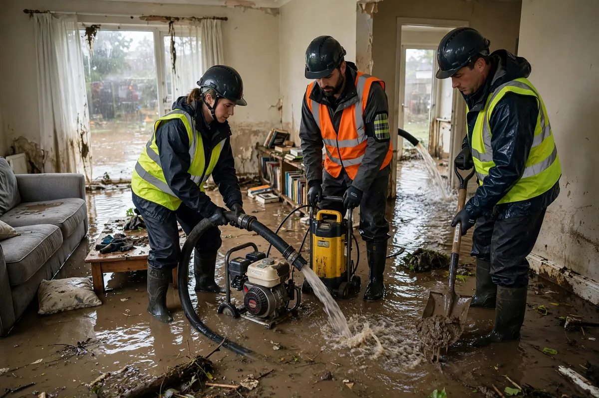

Flood & Storm Water Cleanup in Hollywood, FL
Floodwater doesn't knock — it comes through doors, up through drains, sideways through walls, and down from ceilings all at once. Flood cleanup is the broadest response we offer because flood losses are the broadest kind: water of unknown category across large areas, affecting every material at floor level and wicking upward from there. The mission stays constant through the chaos — get the water out, find everything it touched, dry it all to verified readings, and document the work clearly.

Understanding Flood Cleanup in Hollywood
Flood losses are defined by volume and uncertainty. Unlike a single leaking pipe, floodwater arrives from multiple paths simultaneously and its contamination level is genuinely unknown — storm runoff mixes with ground contaminants, street debris, and whatever the building's own drains contributed. That uncertainty is why flood work starts with category caution: assume the worst, verify as you go. At floor level, nothing is spared — baseboards, lower drywall, flooring, cabinetry toe-kicks, and door frames all take water, which then wicks upward into the walls.
Hollywood's geography makes this a local specialty, not a theoretical exercise: the city sits between the Atlantic and inland canals, so intense rain events and tropical systems push water through more paths than most properties were designed to resist. Humidity then compounds everything — materials that would air-dry in a week elsewhere stay damp here without active dehumidification. Flood drying is therefore never passive; it's extraction, mapping, equipment, and daily readings until the numbers prove the building is dry.
How We Handle the Job
Assessment comes first and it's wider than usual: every room at the waterline, the category of what came in, electrical safety throughout. Bulk water is extracted with high-capacity equipment — flood volume overwhelms anything smaller. Then moisture mapping defines the true boundary, because floodwater wicks higher and hides deeper than its stain line suggests. Contaminated porous materials are removed under proper protocols, remaining structures get cleaned, and the drying phase runs with daily meter readings until each material verifies. Documentation — photos, readings, logs — is built continuously, not after the fact.
Flood jobs evolve as hidden damage surfaces, and we keep you current on what each day's readings show. The sections below cover storm-specific, hurricane-scale, rainwater intrusion, and below-grade scenarios in more detail, and related work such as emergency water extraction and structural drying is typically woven into the same response.
Local Response and Insurance Support
Searching for flood cleanup near me usually means you need help without delay. We answer emergency calls around the clock. Documentation — photos and moisture readings — supports conversations with your insurance carrier when the loss is sudden and accidental. We do not decide coverage; we provide clear technical information about the work performed.
When to Call
Call if you have active water, wet materials that are not drying, odors after a leak, or a backup that may involve contaminated water. Early action in Hollywood’s climate is almost always less disruptive than waiting. For neighborhood-specific service, see our service areas. For the full list of capabilities, visit all services.
Call Now – 24/7 Emergency · (754) 294-7959
Storm Water Cleanup in Hollywood
Storm water cleanup follows wind-driven rain, tropical systems, and intense local downpours that push water through roofs, windows, and openings. After a storm, the priority is the same as any other water loss: remove standing water, map moisture, and dry materials before humidity drives secondary damage. We respond for storm-related water intrusion across Hollywood Beach, Hollywood Lakes, Emerald Hills, and the rest of the city.
Storm losses can involve both relatively clean rainwater and water that picked up contaminants from the ground or building exterior. We assess conditions on site and adjust cleaning protocols accordingly. Structural drying remains essential even when the water looks clear.
Hurricane Water Cleanup
Hurricane water cleanup is often larger in scale and may arrive while the broader area is still recovering. Our role is focused water extraction and drying so buildings can stabilize. We work residential and commercial properties when access and safety allow. Documentation of moisture and work performed supports later insurance conversations. Permanent roof or structural reconstruction is a separate phase; our priority is controlling water and drying the interior.
Rainwater Intrusion Cleanup
Rainwater intrusion happens when weather barriers fail — a roof penetration, a window, a door threshold, or a wall opening. Water may travel along framing and appear far from the entry point. Ceiling stains, wet insulation, and damp drywall are common signs. Cleanup includes extraction where water has pooled, drying of wet assemblies, and moisture verification. We coordinate with your roofer or contractor when permanent repairs are needed to stop the source.
Basement and Lower-Level Flooding
Lower-level and basement-style flooding in Hollywood properties needs thorough extraction and drying because concrete and finished materials can hold moisture longer. Related support is also available through our basement flood cleanup service page when the loss is concentrated below grade.
Frequently Asked Questions
What makes flood cleanup different from a regular leak cleanup?
Scale and uncertainty. Floodwater covers large areas, arrives from multiple directions at once, and its contamination level is unknown — so the work starts with broader assessment, heavier extraction, and stricter contamination protocols than a single-source leak.
Is floodwater always contaminated?
We treat it as potentially contaminated until assessed. Storm runoff picks up ground contaminants, debris, and drain contents on its way in. Porous materials it soaked are handled accordingly; hard surfaces are cleaned and disinfected.
How do you dry a whole house after a flood?
The same way as a small loss, scaled up: moisture mapping to find the true wet boundary, commercial air movers and dehumidifiers placed per that map, and daily readings until every material verifies dry. Volume changes the equipment count, not the method.
Will my flood damage be covered by homeowners insurance?
Standard homeowners policies typically cover sudden internal water losses but exclude rising floodwater, which is usually a separate flood policy. Document everything from the start and check both policies with your carrier — we provide the documentation file either way.